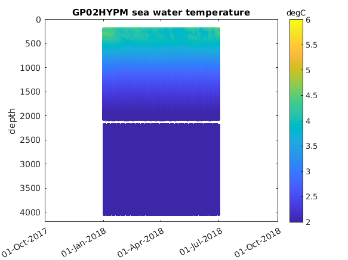

Example Apex Profiler Mooring CTDs#
Platform:#
Station Papa:#
* GP03FLMA, GP03FLMB, GP02HYPM
* GPGL276, GPGL361, GPGL362, GPGL363, GPGL364, GPGL365, GPGL453, GPGL523, GPGL525, GPGL537, GPGL469
* GPPG514, GPPG515, GPPG575, GPPG576
Irminger Sea:#
* GI03FLMA, GI03FLMB, GI01SUMO, GI02HYPM
* GIGL463, GIGL469, GIGL477, GIGL478, GIGL484, GIGL485, GIGL486, GIGL493, GIGL495, GIGL559, GIGL453, GIGL525, GIGL560
* GIPG528, GIPG564, GIPG577, GIPG581
Southern Ocean:#
* GS03FLMA, GS03FLMB, GS01SUMO, GS02HYPM
* GSGL484, GSGL485, GSGL486, GSGL524, GSGL560, GSGL561
* GSPG565, GSPG566
Argentine Basin:#
* GA03FLMA, GA03FLMB, GA01SUMO, GA02HYPM
* GAGL364, GAGL470, GAGL493, GAGL494, GAGL495, GAGL496, GAGL538
* GAPG562, GAPG563, GAPG578, GAPG580
Node:#
* RISER, BUOY, NSIF, PROFILER-U, PROFILER-L
Instrument Class:#
* ADCP, CTD, DOSTA, FLORT, METBK1, METBK2, METBK1-hr, METBK2-hr, MOPAK, NUTNR, OPTAA, PARAD, PCO2A, PCO2W, PHSEN, PRESF, SPKIR, VEL3D, VELPT
* WAVSS_Stats, WAVSS_MeanDir, WAVSS_NonDir, WAVSS_Motion, WAVSS_Fourier
Method:#
* Telemetered, RecoveredHost, RecoveredInst, RecoveredWFP
Load user access credentials for OOINet#
try
load('ooinet.credentials.mat') % returns a variable called options
catch
error(['Unable to load access credentials. Users need to create a ' ...
'weboptions object with their personal OOINet API keys. See ' ...
'README for more information on how to create this.'])
end
Set time period of interest#
start_date='2018-01-01T00:00:00.000Z';
end_date='2018-06-30T23:59:59.000Z';
Specify metadata for Station Papa upper McLane profiler#
platform_name = 'GP02HYPM';
node = 'PROFILER-U';
instrument_class = 'CTD';
method = 'RecoveredWFP';
Get M2M URL#
[uframe_dataset_name,variables] = M2M_URLs(platform_name,node,instrument_class,method);
uframe_dataset_name
uframe_dataset_name = "GP02HYPM/WFP02/04-CTDPFL000/recovered_wfp/ctdpf_ckl_wfp_instrument_recovered"
variables
variables = 1x6 struct array with fields:
name
data
units
Make M2M Call#
[nclist] = M2M_Call(uframe_dataset_name,start_date,end_date,options);
M2M REQUEST MADE, not yet completed:
10 20 30 40 50 60 70 80 done
uframe_m2m_status: request complete
uframe_m2m_status: successful
THREDDS Catalog URL:
https://opendap.oceanobservatories.org/thredds/catalog/ooi/joffrey.peters@whoi.edu/20250513T140637753Z-GP02HYPM-WFP02-04-CTDPFL000-recovered_wfp-ctdpf_ckl_wfp_instrument_recovered/catalog.html
Get Data#
%[ctd_variables_upper_wfp, ctd_mtime_upper_wfp, netcdfFilenames] = M2M_Data(variables, nclist, false); %This will download .nc file(s) and read in the data from the local files
[ctd_variables_upper_wfp, ctd_mtime_upper_wfp, ~] = M2M_Data(variables, nclist); %This will use the opendap to read in the data from remote files
Specify metadata for Station Papa lower McLane profiler#
platform_name = 'GP02HYPM';
node = 'PROFILER-L';
instrument_class = 'CTD';
method = 'RecoveredWFP';
Get M2M URL#
[uframe_dataset_name,variables] = M2M_URLs(platform_name,node,instrument_class,method);
Make M2M Call#
[nclist] = M2M_Call(uframe_dataset_name,start_date,end_date,options);
M2M REQUEST MADE, not yet completed:
10 20 30 40 50 60 70 80 done
uframe_m2m_status: request complete
uframe_m2m_status: successful
THREDDS Catalog URL:
https://opendap.oceanobservatories.org/thredds/catalog/ooi/joffrey.peters@whoi.edu/20250513T140812148Z-GP02HYPM-WFP03-04-CTDPFL000-recovered_wfp-ctdpf_ckl_wfp_instrument_recovered/catalog.html
Get Data#
%[ctd_variables_lower_wfp, ctd_mtime_lower_wfp, netcdfFilenames] = M2M_Data(variables, nclist, false); %This will download .nc file(s) and read in the data from the local files
[ctd_variables_lower_wfp, ctd_mtime_lower_wfp, ~] = M2M_Data(variables, nclist); %This will use the opendap to read in the data from remote files
Example plot#
figure
scatter(ctd_mtime_upper_wfp,ctd_variables_upper_wfp(5).data,5,ctd_variables_upper_wfp(2).data)
set(gca, 'YDir','reverse')
ylabel('depth')
ylim([0 4200])
hold on
scatter(ctd_mtime_lower_wfp,ctd_variables_lower_wfp(5).data,5,ctd_variables_lower_wfp(2).data)
caxis([2 6])
c=colorbar;
title(c,ctd_variables_lower_wfp(2).units)
datetick('x',1)
title([platform_name ' ' strrep(ctd_variables_lower_wfp(2).name,'_',' ')])
box on
